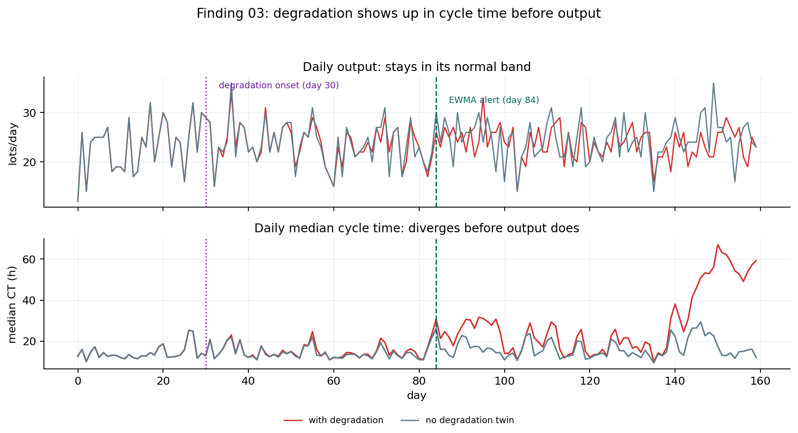

Fab Simulation, Monitoring & Decision Support
Read a real production log, then summarize case paths, directly-following transitions, cycle time, waiting time, and rework signals.
讀取真實 production log，整理 case path、DFG、cycle time、waiting time 與 rework 訊號，先看流程實際怎麼跑、時間卡在哪。
Build a fixed-seed synthetic fab with batch furnace and re-entrant litho, then test each method against known bottlenecks and injected anomalies.
建立固定 seed 的合成 fab，包含 batch furnace 與 re-entrant LITHO，再用已知瓶頸和刻意注入的異常檢查方法是否抓得到答案。
Compare capacity, maintenance, dispatching, and yield options with CRN-paired what-if runs, each tied to traceable assumptions and KPIs.
把加機台、維修時機、派工規則與良率取捨放進 CRN paired what-if，每次輸出都保留假設、seed 與 KPI 結果。
Three core highlights三大核心亮點
| Station | Processing Time | Utilization | Lots Processed per Run |
|---|---|---|---|
| LITHO | 0.85 h/lot | 85%highest | 1 lot |
| FURNACE | 3.00 h/batchlongest | 37.5% | 4 lotslargest |
| DEPO | 1.30 h/lot | 65% | 1 lot |
| METRO | 0.90 h/lot | 45% | 1 lot |
Note: A lot is the production batch unit tracked through the line.
FURNACE looks important because it is slow per batch and can process 4 lots each time it runs. LITHO looks important because it is loaded closest to its capacity limit.
| 站點 | 加工時間 | 稼動率 | 每次運轉可處理的 lots |
|---|---|---|---|
| LITHO | 0.85 小時/lot | 85%最高 | 1 lot |
| FURNACE | 3.00 小時/batch最長 | 37.5% | 4 lots最大 |
| DEPO | 1.30 小時/lot | 65% | 1 lot |
| METRO | 0.90 小時/lot | 45% | 1 lot |
註：lot 是生產流程中被追蹤的一個批次單位。
FURNACE 看起來重要，是因為單批加工時間長，而且每次運轉可處理 4 lots。LITHO 看起來重要，是因為它最接近產能上限。
| Station | Added Tool | Added Lot-Processing Slots | Avg Cycle-Time Reduction |
|---|---|---|---|
| LITHO | +1 tool | ||
| FURNACE | +1 tool | ||
| DEPO | +1 tool | ||
| METRO | +1 tool |
Method: Cycle-time reduction = baseline average lot cycle time minus the average lot cycle time after adding one tool to that station. Negative table values mean the scenario's average cycle time is lower than baseline.
Estimates come from CRN-paired what-if replications (N=30); the LITHO reduction is 2.46 h with a 95% CI of 2.13-2.79 h.
FURNACE looks important because one added tool can process 4 lots at a time. But adding one FURNACE tool only reduces average cycle time by about 0.70 hours. Adding one LITHO tool processes only 1 additional lot at a time, but reduces average cycle time by about 2.46 hours. In this scenario, the better capacity decision is the station that reduces whole-line cycle time the most, not the station that adds the most lot-processing slots.
| 站點 | 新增工具 | 新增可處理的 lots | 平均 cycle time 下降 |
|---|---|---|---|
| LITHO | +1 台 | ||
| FURNACE | +1 台 | ||
| DEPO | +1 台 | ||
| METRO | +1 台 |
方法：cycle-time 下降 = 基準情境的平均 lot cycle time - 加一台工具後的平均 lot cycle time。表中的負值代表該情境的平均 cycle time 比基準更短。
數據來自 CRN 配對的 what-if 重複實驗（N=30）；LITHO 的降幅為 2.46 小時，95% CI 為 2.13-2.79 小時。
FURNACE 看似重要，因為新增一台可以多處理 4 lots。但新增一台 FURNACE 工具，只讓平均 cycle time 下降約 0.70 小時。新增一台 LITHO 一次只多處理 1 lot，卻讓平均 cycle time 下降約 2.46 小時。在此情境，較好的產能決策不是新增最多 lot-processing slots 的站點，而是最能降低整條線 cycle time 的站點。
| Station站點 | Avg Cycle-Time Reduction平均 cycle time 降幅 | Investment-Stress Net Cost Change投資壓力情境淨成本變化 | Decision Tension決策張力 |
|---|---|---|---|
| LITHO | Largest cycle-time reduction, but higher investment costcycle time 降幅最大，但投資成本較高 | ||
| FURNACE | Lower cost pressure, but smaller cycle-time gain成本壓力較低，但 cycle time 改善較小 | ||
| DEPO | Small improvement, weak business case改善幅度小，商業理由偏弱 | ||
| METRO | Minimal system impact對整體系統影響很小 |
Base case: equal tool-cost assumption. With the default $20k added-tool cost for every station, LITHO wins both metrics: 2.46 h average cycle-time reduction and about -$12k net cost change.
基準情境：相同工具成本假設。在每個站點新增工具成本皆為 $20k 的預設假設下，LITHO 同時勝出：平均 cycle time 降低 2.46 小時，淨成本變化約 -$12k。
Investment-stress scenario: station-specific tool-cost assumptions. LITHO $40k, FURNACE $8k, DEPO $5k, METRO $2k.
投資壓力情境：站點別工具成本假設。LITHO $40k、FURNACE $8k、DEPO $5k、METRO $2k。
Calculation: Net cost change = scenario total cost - baseline total cost. Total cost includes processing cost (tool busy-hours × illustrative processing rate), waiting / congestion cost (lot queue-wait hours × illustrative holding rate), and added tool cost (number of added tools × illustrative tool cost). Negative saves versus baseline; positive costs more.
計算方式：淨成本變化 = 方案總成本 − 基準總成本
總成本包含：
（負值代表相對基準省錢；正值代表成本增加）
Processing consumes tool time, energy, labor, and maintenance resources. Waiting creates WIP burden, longer lead time, and congestion risk.
處理會消耗工具時間、能源、人力與維護資源；等待會造成 WIP 負擔、lead time 變長與壅塞風險。
If the priority is shortening cycle time, the better choice may be paying higher cost for a larger cycle-time improvement.
If short-term financial return is the priority, the better choice may be the option with the strongest net saving or fastest payback.
If both matter, first define the minimum cycle-time improvement required, then choose the most cost-effective option that meets that threshold.
如果優先目標是縮短 cycle-time，較好的選擇可能是支付較高成本換取較大的 cycle-time 改善。
如果優先目標是短期財務回報，較好的選擇可能是淨節省最高或回收最快的方案。
如果兩者都重要，先定義最低需要的 cycle-time 改善門檻，再選擇符合門檻且最具成本效益的方案。
Operational impact, investment cost, and business objective must be evaluated together to find the best answer for the current situation.
營運影響、投資成本與商業目標必須綜合評估，在不同的當下情境找出最佳解。
When equipment degrades slowly, output metrics may not warn immediately; by the time output falls, congestion cost has already accumulated. This monitoring design uses EWMA, a control-chart method sensitive to small persistent drift, as the baseline. Labeled anomaly scenarios measure detection delay and false-alarm rate, then convert alert timing into cost still avoidable. In a 160-day synthetic backtest, an output-only monitor stays silent over the whole horizon, while EWMA alerts 54 days after degradation onset, when most (about 95%) of the extra congestion cost is still avoidable under illustrative waiting-cost assumptions. This is not a real-fab savings promise; it shows how the workflow turns detection time into decision value.
設備緩慢劣化時，產出指標可能尚無警訊，等產出下滑，早已累積了一定的壅塞成本。本專案的監控設計以 EWMA 對小幅持續漂移敏感的管制圖方法作為基線，用標註好的異常情境量測偵測延遲與誤報率，再把警報時間點換算成仍可避免的成本。在 160 天的合成回測中，只看產出的監控整段期間沒有發出任何警報；EWMA 在劣化開始後 54 天發出警報，在示意等待成本假設下，此時大部分（約 95%）的額外壅塞成本仍可避免。這不是實廠節省承諾，而是展示這套流程如何把偵測時間轉成決策價值。
| Monitoring approach | Signal watched | Alert logic | Result | Consequence |
|---|---|---|---|---|
| 監控方式 | 監控訊號 | alert 邏輯 | 結果 | 後果 |
| Output-only monitor只看 output 的監控 | Daily output / throughputDaily output / throughput | Alert only when output drops below the clean baseline lower control limit.只有當 output 低於乾淨 baseline 的下控制線時才 alert。 | No alert within 160 days160 天內沒有 alert | No alert: the problem runs to day 160 and ≈$249k of extra cost accumulates沒有 alert，問題一路跑到 day 160，累積約 $249k 的額外成本 |
| EWMA drift monitorEWMA 漂移監控 | Daily median lot cycle time每日 lot cycle time 中位數 | Alert when small persistent cycle-time drift accumulates.小而持續的 cycle-time 偏移累積後 alert。 | Alert on day 84day 84 alert | Alert on day 84: only ≈$12k has accumulated; ≈$237k (95%) is still avoidableday 84 alert，此時只累積約 $12k；約 $237k（95%）仍可避免 |

Visual takeaway: daily output remains noisy but ordinary, while daily median cycle time separates from the clean twin after degradation starts.
Visual takeaway：daily output 看起來仍在正常波動中，但 daily median cycle time 在 degradation 開始後逐漸和 clean twin 分離。
Where does $249k come from? Waiting is priced at an illustrative $10 per lot-hour in queue, and the gap is measured against a no-degradation twin of the same run. Degradation makes queues grow on themselves, so the cost accelerates: the first 54 days accumulate only ≈$12k, the next 76 days ≈$237k. The rate is an assumption; the structure is not: cost accelerates, and early detection saves most of it.
$249k 是怎麼算出來的？等待以示意費率 $10／lot·小時計價，成本差距是與同一次 run 的無劣化對照（twin）相比。劣化會讓排隊自我放大，所以成本是 加速累積的：前 54 天只累積約 $12k，後 76 天累積約 $237k。費率是假設；但結構不是假設： 成本會加速累積，越早偵測出異常能省下越多成本。
Another advantage is that this workflow can be backtested: it checks whether a drift detector finds the problem before output makes it obvious, then estimates how much future cost early action can avoid.
另一個優勢是這個流程可以 backtest：先檢查 drift detector 是否能在 output 明顯變差前找到問題，再估算及早行動可以避免多少後續成本。
These are not four separate dashboards. The point is that the same simulation core can answer four operations questions: add capacity, time PM, choose dispatch policy, and evaluate yield trade-offs. Each run records scenario settings, seed, assumptions, and KPIs, so the numbers can be checked later. An agent can call that what-if engine to draft a decision memo from logged results rather than inventing numbers. Packaging scenarios would still need their own model; this page claims transferable method, not completed packaging modeling.
這裡的重點不是四個獨立 dashboard，而是同一個模擬核心可以重複回答四種營運問題：加機台、維修時機、派工規則、良率取捨。每次分析都用相同格式留下 scenario、seed、假設與 KPI 結果，所以數字可以追溯。這代表未來若要讓 AI agent 產出決策備忘錄，它呼叫的是同一套 what-if engine，而不是自由生成答案。封裝情境仍需重新建模；這裡只主張方法可遷移，不主張已完成封裝模型。
Takeaway: capacity is ranked by whole-line cycle-time impact, not local batch intuition.
Takeaway：capacity decision 看 whole-line cycle-time impact，不只看局部 batch 直覺。
Takeaway: monitoring becomes a PM-timing trade-off once cost is attached to delay.
Takeaway：當 delay 有成本，monitoring 就會變成 PM-timing trade-off。
Takeaway: the best dispatch policy changes when the operating objective changes.
Takeaway：operating objective 改變時，最佳 dispatch policy 也會改變。
Takeaway: speed and yield risk must be visible in the same decision view.
Takeaway：speed 和 yield risk 必須放在同一個 decision view 裡看。
Methodology and validation方法與驗證
Ground truth by design: the synthetic line's bottleneck and anomalies are injected on purpose, so detection and diagnosis quality is measured against a known answer; synthetic data is labeled synthetic throughout.
Consistency check: the simulation core passes a Little's Law internal-consistency check with a long-run WIP gap of 0.2%; per simulation V&V methodology this is a check of internal model correctness, not a validity claim about any real fab.
Scope boundary: the cost model produces only relative rankings under stated assumptions with sensitivity checks; the real production log is used only for defensible process reconstruction and diagnosis; a live data link to a physical fab (the defining feature of a digital twin) is explicitly outside the boundary.
References: Little (1961, Operations Research); Sargent (2013, Journal of Simulation); NIST/SEMATECH e-Handbook 6.3.2.4; Capezza et al. (2024, Journal of Quality Technology).
已知真值設計：合成產線的瓶頸與異常皆為刻意注入，方法的偵測與診斷品質有標準答案可對照量測；合成資料全程明示為合成。
一致性檢查：模擬核心以 Little's Law 做內部一致性檢查，長期運行的 WIP 誤差 0.2%；依模擬驗證方法學，此為模型內部正確性檢查，不是對任何真實工廠的有效性宣稱。
適用邊界：成本模型只做給定假設下的相對排序與敏感度分析；真實生產紀錄僅用於可辯護的流程診斷；與實體工廠的即時資料連線（數位孿生的定義性特徵）明確劃在邊界之外。
參考文獻： Little (1961, Operations Research)、 Sargent (2013, Journal of Simulation)、 NIST/SEMATECH e-Handbook 6.3.2.4、 Capezza et al. (2024, Journal of Quality Technology)。
Turn messy operational data into clear, credible, executable manufacturing decisions.
From bottleneck diagnosis and anomaly monitoring to capacity investment, this project builds an automated decision-support workflow that helps operations teams decide faster and more precisely.
把雜亂的營運數據，轉成清楚、可信、可執行的製造決策。
從瓶頸診斷、異常監控到產能投資，建立一套讓營運決策更快、更精準的自動化輔助流程。
Honest scope: the simulated line is clearly labeled synthetic; it exists to give the methods a known ground truth (an engineered bottleneck, labeled fault windows). The real production log is used for diagnosis only. Cost figures are illustrative and used for ranking, not as dollar forecasts.
誠實聲明:模擬產線全程標示為合成資料。它的用途是給方法一個已知的「標準答案」 (刻意設計的瓶頸、標記好的故障區間)。真實生產紀錄僅用於診斷。成本數字為示意性質,用於相對排序, 並非金額預測。